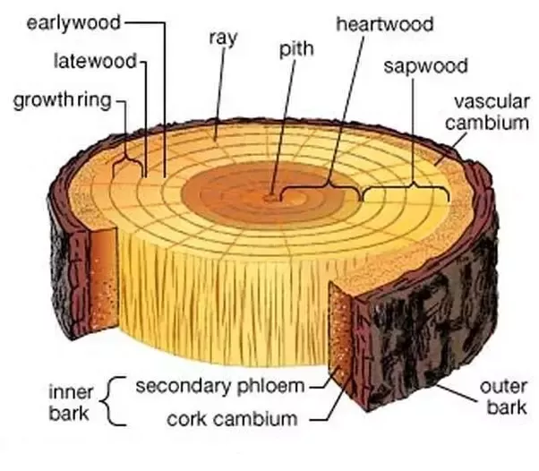
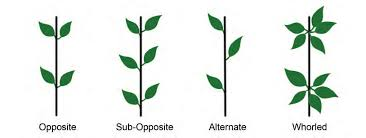
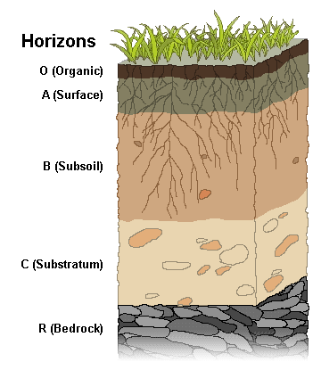
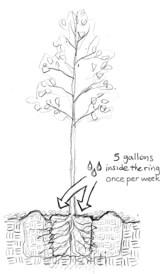
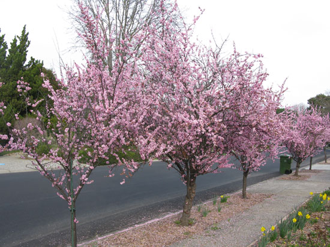

Question 1: What layer of cells is responsible for outward trunk growth and increased girth of a tree?
The correct answer is a. cambium. The cambium is a thin sheath of dividing cells that produces the cells that will become the vascular system of the tree. The cambium produces xylem to the inside and phloem to the outside. The xylem is composed if dead and living cells. Old, nonfunctioning xylem constitutes the wood of the tree and contributes to the increase in diameter of the tree.
Question 2: Which genus of trees usually does not have an opposite leaf arrangement?
The correct answer is c. Quercus (oaks). In temperate North America, Europe, and Asia, most of the trees with opposite leaf arrangements fall into four genera represented by the memory device “MAD Horse,” for maple, ash, dogwood, and horsechestnut.
Question 3: Most of the fine, absorbing roots are typically found near the soil surface because...
The correct answer is a. roots grow where conditions are favorable. The A (surface) horizon and sometimes the O (organic) horizon contains most of the fine absorbing roots of trees and is very biologically active. The A horizon is normally rich in organic matter, which gives this horizon its characteristic dark color.
Question 4: When irrigating trees, ...
The correct answer is d. infrequent, deep soakings are preferable to frequent, shallow waterings. Newly transplanted trees require frequent watering to help establish the plant. However, after the plant has been established, frequent shallow waterings encourage surface rooting, which makes the tree vulnerable to drying out. Infrequent, deep soakings can encourage the development of a deeper root system and more drought-tolerant trees.
Question 5: To prune trees that flower on the previous year’s growth and maximize flowering, you should prune...
The correct answer is b. shortly after flowering. Flowering can be prevented or enhanced by pruning at the appropriate time of the year. Plants that bloom on last season’s wood, such as many fruit trees, should be pruned just after bloom.
Good Job! Your answer is correct!
Sorry, that answer is incorrect.
Sorry, your time is up.